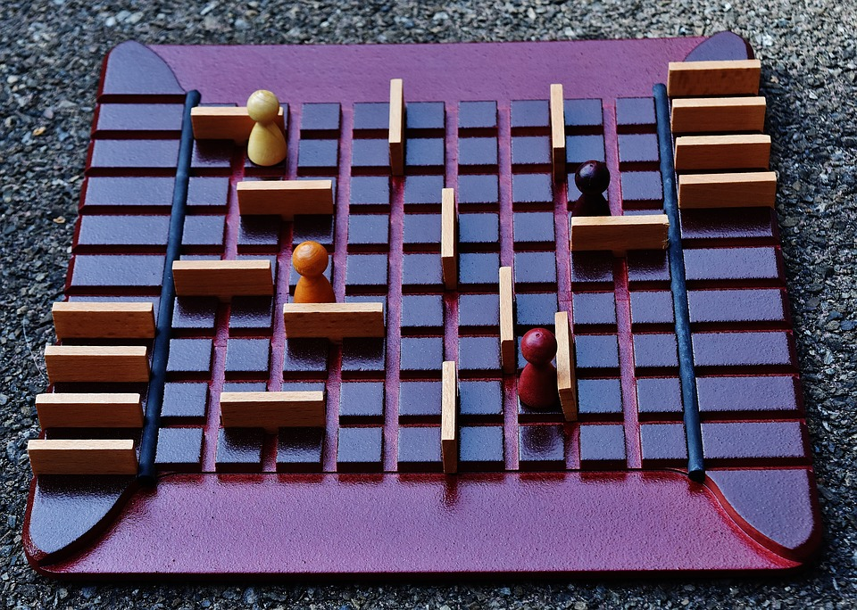

Jeu de société créé en python dans le cadre du projet de bac d'ISN 2020. Le quoridor est un jeu de plateau d'ont le but est d'atteindre l'autre côté du plateau de 9x9 cases avant sont adversaire. Les deux joueurs jouent tour à tour et choisissent entre avancer d'une case ( pas de déplacements diagonnaux ) ou poser une barrière pour bloquer l'autre joueur ( un chemin doit toujours être possible ). Chaque joueur ne dispose cependant que de 8 barrières.
